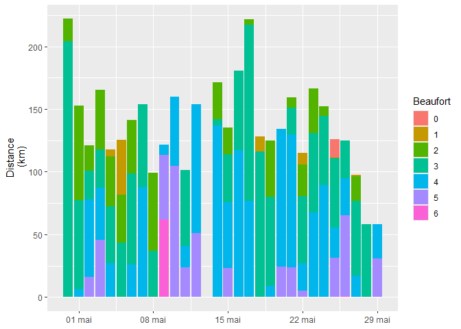
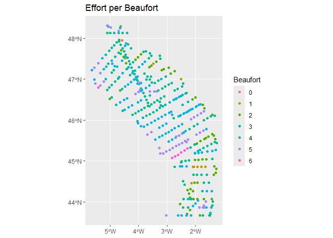

This üì¶ includes all the functions needed to analyze distance sampling data. From raw data to distribution mapping and ESW calculation, the pelascope package brings together a set of useful functions for analyzing field data. A description is available on the pelascope website.
Installation
You can install pelascope like so:
install.packages("remotes")
remotes::install_gitlab(
host = "https://gitlab.univ-lr.fr",
repo = "pelaverse/pelascope",
build_vignettes = FALSE
)
library(pelascope)
#> Warning: remplacement de l'importation précédente 'Distance::create.bins' par
#> 'mrds::create.bins' lors du chargement de 'pelaCDS'
#> Warning: remplacement de l'importation précédente 'magrittr::set_names' par
#> 'purrr::set_names' lors du chargement de 'pelascope'
library(dplyr)
#>
#> Attachement du package : 'dplyr'
#> Les objets suivants sont masqués depuis 'package:stats':
#>
#> filter, lag
#> Les objets suivants sont masqués depuis 'package:base':
#>
#> intersect, setdiff, setequal, unionEffort
First step: take care of the effort table. The data set (extracted from the database) must be imported, and then they let it go!
Import effort table
data_effort_path = system.file(package = "pelascope", "extract_test_effort_BD.csv")
data_effort_brut <- read.csv2(data_effort_path)
head(data_effort_brut)
#> gid strateType survey cycle session computer ship transect
#> 1 41804 Neritic PELGAS 2023 LEG1 C Thalassa NULL
#> 2 41805 Neritic PELGAS 2023 LEG1 C Thalassa NULL
#> 3 41806 Neritic PELGAS 2023 LEG1 C Thalassa NULL
#> 4 41807 Neritic PELGAS 2023 LEG1 C Thalassa NULL
#> 5 41808 Neritic PELGAS 2023 LEG1 C Thalassa NULL
#> 6 41809 Neritic PELGAS 2023 LEG1 C Thalassa NULL
#> plateform routeType status effortGrp effortLeg
#> 1 upper_bridge_outside prospection BEGIN 30042023_C_G1 30042023_C_L1
#> 2 upper_bridge_outside prospection ADD 30042023_C_G1 30042023_C_L2
#> 3 upper_bridge_outside prospection END 30042023_C_G1 30042023_C_L1
#> 4 upper_bridge_outside other BEGIN 30042023_C_G2 30042023_C_L1
#> 5 upper_bridge_outside other END 30042023_C_G2 30042023_C_L1
#> 6 upper_bridge_outside prospection BEGIN 30042023_C_G3 30042023_C_L1
#> date hhmmss1 left right speed courseAvg seaState windDir windForce
#> 1 30/04/2023 63702 CADE GAMO 10 248 2 310 6
#> 2 30/04/2023 70019 CADE GAMO 11 219 2 310 6
#> 3 30/04/2023 73055 CADE GAMO 11 208 2 310 6
#> 4 30/04/2023 73056 NULL NULL 11 208 2 310 6
#> 5 30/04/2023 91018 NULL NULL 11 208 2 310 6
#> 6 30/04/2023 91020 GAMO ELME 10 168 3 295 9
#> swellDir swellHgt glareFrom glareTo glareSever cloudCover visibility
#> 1 0 0 0 0 none 8 2
#> 2 0 0 0 0 none 8 2
#> 3 0 0 0 0 none 8 2
#> 4 0 0 0 0 none 8 2
#> 5 0 0 0 0 none 8 2
#> 6 280 1.5 0 0 none 8 2
#> subjectMam subjectBir camera comment nObservers center lat
#> 1 MM NULL OFF BROUILLARD 2 NULL 48.34592
#> 2 MM NULL OFF NULL 2 NULL 48.29903333
#> 3 MM NULL OFF REUNION SECURITE 2 NULL 48.22907033
#> 4 MM NULL OFF REUNION SECURITE 0 NULL 48.229065
#> 5 MM NULL OFF REUNION SECURITE 0 NULL 47.96489167
#> 6 MM NULL OFF NULL 2 NULL 47.96479833
#> lon geom hhmmss
#> 1 -4.541956667 0101000020E6100000E7BA3CB0F62A12C02384471B472C4840 06:37:02
#> 2 -4.620433333 0101000020E6100000470F30E0527B12C04A8A69B946264840 07:00:19
#> 3 -4.709607167 0101000020E6100000BE5CD742A3D612C03E133B2D521D4840 07:30:55
#> 4 -4.7096 0101000020E610000066F7E461A1D612C041D47D00521D4840 07:30:56
#> 5 -4.711337917 0101000020E6100000D6F381F768D812C01A42F49181FB4740 09:10:18
#> 6 -4.711299639 0101000020E6100000D1BCBAEE5ED812C06F7304837EFB4740 09:10:20
#> dateTime TransectID LegID
#> 1 30/04/2019 23:50 TR_Pelgas_30042023 30042023_SEG_2849
#> 2 30/04/2019 23:50 TR_Pelgas_30042023 30042023_SEG_2849
#> 3 30/04/2019 23:50 TR_Pelgas_30042023 30042023_SEG_2849
#> 4 30/04/2019 23:50 TR_Pelgas_30042023 30042023_SEG_2850
#> 5 30/04/2019 23:50 TR_Pelgas_30042023 30042023_SEG_2850
#> 6 30/04/2019 23:50 TR_Pelgas_30042023 30042023_SEG_2851
plot_subjective(effort_table_brut = data_effort_brut)
#> $table_subjective
#> # A tibble: 8 × 2
#> # Groups: Subjective [8]
#> Subjective Count
#> <chr> <int>
#> 1 EE 22
#> 2 EG 6
#> 3 GG 356
#> 4 GM 98
#> 5 GP 9
#> 6 MM 213
#> 7 MP 66
#> 8 PP 46
#>
#> $figure_subjectiveCheck and transform effort
After importing the raw data set from the database, it is necessary to perform some security checks and transform the data set in order to continue the workflow. The ‘check_raw_effort’ function allows you to change the names of the columns, create the DateTime column, and select the column you are interested in. The function has 3 arguments :
data_effort: raw data effort
only_prospection: TRUE or FALSE, if it’s needed to keep not only prospection route type
filter_speed: minimum speed to be keep
data_effort_clean <-
check_raw_effort(data_effort = data_effort_brut,
only_prospection = TRUE,
filter_speed = 8)
#>
#> ── Information regarding the dataset ──
#>
#> Route Type Effort Point Count
#> 1 other 142
#> 2 prospection 558
#> 3 trawling 116
#> ── Dataset cleaned ──
#>
head(data_effort_clean)
#> Survey plateform routeType status LegID speed Beaufort
#> 1 PELGAS upper_bridge_outside prospection BEGIN 30042023_C_G1 10 2
#> 2 PELGAS upper_bridge_outside prospection ADD 30042023_C_G1 11 2
#> 3 PELGAS upper_bridge_outside prospection END 30042023_C_G1 11 2
#> 4 PELGAS upper_bridge_outside prospection BEGIN 30042023_C_G3 10 3
#> 5 PELGAS upper_bridge_outside prospection ADD 30042023_C_G3 11 3
#> 6 PELGAS upper_bridge_outside prospection ADD 30042023_C_G3 11 3
#> Latitude Longitude n_obs DateTime TransectID
#> 1 48.34592 -4.541957 2 2023-04-30 06:37:02 TR_Pelgas_30042023
#> 2 48.29903 -4.620433 2 2023-04-30 07:00:19 TR_Pelgas_30042023
#> 3 48.22907 -4.709607 2 2023-04-30 07:30:55 TR_Pelgas_30042023
#> 4 47.96480 -4.711300 2 2023-04-30 09:10:20 TR_Pelgas_30042023
#> 5 47.89950 -4.680827 2 2023-04-30 09:34:07 TR_Pelgas_30042023
#> 6 47.83268 -4.624492 2 2023-04-30 09:59:15 TR_Pelgas_30042023Prepare the effort table for linearization
In some cases, the LegID column does not represent a constant environment and may change over time. To resolve this issue, the ‘prep_lin’ function recreates effort points when necessary (with “NEW” as the status) and adjusts the ‘LegID’ column to obtain a constant environment during the Leg.
data_effort_clean <- pelascope::prep_lin(
effort_table = data_effort_clean,
variable = quos(Beaufort, plateform, n_obs),
unique_column = "LegID")
#> Redefinig LegID columnn according to Beaufort, plateform and n_obs
head(data_effort_clean)
#> Survey plateform routeType status LegID speed Beaufort
#> 1 PELGAS upper_bridge_outside prospection BEGIN 30042023_C_G1_1 10 2
#> 2 PELGAS upper_bridge_outside prospection ADD 30042023_C_G1_1 11 2
#> 3 PELGAS upper_bridge_outside prospection END 30042023_C_G1_1 11 2
#> 4 PELGAS upper_bridge_outside prospection BEGIN 30042023_C_G3_2 10 3
#> 5 PELGAS upper_bridge_outside prospection ADD 30042023_C_G3_2 11 3
#> 6 PELGAS upper_bridge_outside prospection ADD 30042023_C_G3_2 11 3
#> Latitude Longitude n_obs DateTime TransectID
#> 1 48.34592 -4.541957 2 2023-04-30 06:37:02 TR_Pelgas_30042023
#> 2 48.29903 -4.620433 2 2023-04-30 07:00:19 TR_Pelgas_30042023
#> 3 48.22907 -4.709607 2 2023-04-30 07:30:55 TR_Pelgas_30042023
#> 4 47.96480 -4.711300 2 2023-04-30 09:10:20 TR_Pelgas_30042023
#> 5 47.89950 -4.680827 2 2023-04-30 09:34:07 TR_Pelgas_30042023
#> 6 47.83268 -4.624492 2 2023-04-30 09:59:15 TR_Pelgas_30042023Use AmbiDSM to linearize and segment
Now that the dataset is clean and in the correct format, it is possible to linearize and segment the effort. The following steps can be performed using the AmniDSM package (https://gitlab.univ-lr.fr/pelaverse/AMBIdsm).
Check visual
The check produces a map that initially shows the effort required.
library(AMBIdsm)
# Check using a map
check <- data_effort_clean %>%
eff_check_leg(crs = 4326)
#> → 18 Legs have only one point
check$mapfigCheck column
# Check dataset
data_effort_clean <- data_effort_clean %>%
eff_check_columns()Linearization of the effort
The function has 3 arguments :
variable_keep: list of variables to be keep after linearisation
length_min: lenght of minimal linear to be keep, shorter are deleted
crs
# Linearisation
data_effort_clean_lin = data_effort_clean %>%
eff_linearize(variable_keep = c("Beaufort","TransectID", "plateform", "n_obs"),
length_min = 0.1,
crs = 4326)
#>
#> ── Linearizing Effort ──
#>
#> ℹ 227 breaks have been made within legs for linearization
#> ℹ 237 Legs have only one point : they are suppressed
head(data_effort_clean_lin)
#> Simple feature collection with 6 features and 10 fields
#> Geometry type: LINESTRING
#> Dimension: XY
#> Bounding box: xmin: -4.677252 ymin: 44.46407 xmax: -1.592198 ymax: 47.97051
#> Geodetic CRS: WGS 84
#> # A tibble: 6 × 11
#> Beaufort TransectID plateform n_obs id LegID Start_time
#> <dbl> <chr> <chr> <dbl> <dbl> <chr> <dttm>
#> 1 0 TR_Pelgas_25052023 upper_bridg… 2 192 2505… 2023-05-25 04:57:07
#> 2 1 TR_Pelgas_04052023 upper_bridg… 2 31 0405… 2023-05-04 11:42:53
#> 3 1 TR_Pelgas_05052023 upper_bridg… 2 45 0505… 2023-05-05 13:56:44
#> 4 1 TR_Pelgas_05052023 upper_bridg… 2 48 0505… 2023-05-05 16:09:17
#> 5 1 TR_Pelgas_18052023 upper_bridg… 2 145 1805… 2023-05-18 11:33:05
#> 6 1 TR_Pelgas_22052023 upper_bridg… 2 174 2205… 2023-05-22 15:03:10
#> # ℹ 4 more variables: DateTime <dttm>, End_time <dttm>, Length <dbl>,
#> # geometry <LINESTRING [°]>Segmentation of the effort
Segmentation of the effort. Here to solve a temporary problem, ‘SegID’ are rendered unique.
# Segmentation
data_effort_clean_Seg <- data_effort_clean_lin %>%
eff_segment(length = 10) %>%
mutate(SegID = paste0(SegID, "_", row_number()))
#>
#> ── Segmenting Effort ──
#>
#> Linking to GEOS 3.12.2, GDAL 3.9.3, PROJ 9.4.1; sf_use_s2() is TRUE
head(data_effort_clean_Seg)
#> Simple feature collection with 6 features and 10 fields
#> Attribute-geometry relationships: constant (10)
#> Geometry type: POINT
#> Dimension: XY
#> Bounding box: xmin: -4.582032 ymin: 44.46551 xmax: -1.659766 ymax: 47.95554
#> Geodetic CRS: WGS 84
#> # A tibble: 6 × 11
#> Beaufort TransectID plateform n_obs LegID Start_time
#> <dbl> <chr> <chr> <dbl> <chr> <dttm>
#> 1 0 TR_Pelgas_25052023 upper_bridge_outs… 2 2505… 2023-05-25 04:57:07
#> 2 1 TR_Pelgas_04052023 upper_bridge_outs… 2 0405… 2023-05-04 11:42:53
#> 3 1 TR_Pelgas_05052023 upper_bridge_outs… 2 0505… 2023-05-05 13:56:44
#> 4 1 TR_Pelgas_05052023 upper_bridge_outs… 2 0505… 2023-05-05 13:56:44
#> 5 1 TR_Pelgas_05052023 upper_bridge_outs… 2 0505… 2023-05-05 13:56:44
#> 6 1 TR_Pelgas_05052023 upper_bridge_outs… 2 0505… 2023-05-05 13:56:44
#> # ℹ 5 more variables: DateTime <dttm>, End_time <dttm>, SegID <chr>,
#> # Effort <dbl>, geometry <POINT [°]>Vizualize and save the effort linearized and segmented
Save as GPKG
library(sf)
# Put effort coordinate
data_effort_sf <-
data_effort_clean %>%
dplyr::mutate(Longitude_wg84 = Longitude,
Latitude_wg84 = Latitude) %>%
sf::st_as_sf(coords = c("Longitude", "Latitude"), crs = 4326)
# Save
st_write(data_effort_sf, dsn = "./Effort_prepared.gpkg", layer = "effort")
st_write(data_effort_clean_lin, dsn = "./Effort_prepared.gpkg", layer = "effort_linearized")
st_write(data_effort_clean_Seg, dsn = "./Effort_prepared.gpkg", layer = "effort_segmented")Create vizualisation
library(ggplot2)
library(lubridate)
#>
#> Attachement du package : 'lubridate'
#> Les objets suivants sont masqués depuis 'package:base':
#>
#> date, intersect, setdiff, union
plot_effort <- ggplot() +
geom_sf(data = data_effort_clean_lin, color = "red") +
geom_sf(data = data_effort_clean_Seg, size = .001) +
ggtitle("Effort linearized and segmented") +
facet_wrap(~year(DateTime))
plot_effortSightings
This section produces a clean table from sightings data base.
Import Sightings
Importing the sightings data set from the database.
data_sight_path = system.file(package = "pelascope", "extract_test_sightings_BD.csv")
data_sight_brut <- read.csv2(data_sight_path)
head(data_sight_brut)
#> gid geom region survey cycle
#> 1 52781 0101000020E61000004A6F6C63D93912C0EB9984F8AD2B4840 NEA PELGAS 2023
#> 2 52782 0101000020E6100000AF31FB4F114A12C0EDAD22B6CE2A4840 NEA PELGAS 2023
#> 3 52783 0101000020E610000070198361D34D12C0181853C3912A4840 NEA PELGAS 2023
#> 4 52784 0101000020E6100000C46BAA015D4E12C04A0C022B872A4840 NEA PELGAS 2023
#> 5 52786 0101000020E6100000A58FAD543D5612C0924EFE01E9294840 NEA PELGAS 2023
#> 6 52785 0101000020E6100000F6515927415212C0473D44A33B2A4840 NEA PELGAS 2023
#> computer routeType effortGrp effortLeg sighting date hhmmss
#> 1 C prospection 30042023_C_G1 30042023_C_L1 [null] 30/04/2023 06:40:41
#> 2 C prospection 30042023_C_G1 30042023_C_L1 [null] 30/04/2023 06:44:46
#> 3 C prospection 30042023_C_G1 30042023_C_L1 [null] 30/04/2023 06:44:47
#> 4 C prospection 30042023_C_G1 30042023_C_L1 [null] 30/04/2023 06:45:54
#> 5 C prospection 30042023_C_G1 30042023_C_L1 [null] 30/04/2023 06:47:10
#> 6 C prospection 30042023_C_G1 30042023_C_L1 [null] 30/04/2023 06:47:00
#> species podSize min max age direction behaviour behavBird behavMam
#> 1 PHACAR 1 NULL NULL NULL 180 moving straight_flight NULL
#> 2 PHACAR 1 NULL NULL NULL 280 moving straight_flight NULL
#> 3 BUOY 1 NULL NULL NULL NULL NULL NULL NULL
#> 4 PHACAR 1 NULL NULL NULL 100 moving straight_flight NULL
#> 5 LARFUS 2 NULL NULL A 140 moving straight_flight NULL
#> 6 MOTOBO 2 NULL NULL NULL NULL stationary NULL NULL
#> behavShip behavGroup comment observer side lat
#> 1 NULL NULL NULL CADE L 48.34124667
#> 2 NULL NULL NULL CADE L 48.33443333
#> 3 NULL NULL NULL GAMO R 48.33257333
#> 4 NULL NULL NULL CADE L 48.33225
#> 5 NULL NULL NULL GAMO R 48.32742333
#> 6 NULL NULL BATEAU PLAISANCE A L ANCRE CADE L 48.329945
#> lon session ship strateType transect dateTime
#> 1 -4.556493333 LEG1 Thalassa Neritic NULL 30/04/2023 06:40
#> 2 -4.572331667 LEG1 Thalassa Neritic NULL 30/04/2023 06:44
#> 3 -4.576001667 LEG1 Thalassa Neritic NULL 30/04/2023 06:44
#> 4 -4.576526667 LEG1 Thalassa Neritic NULL 30/04/2023 06:45
#> 5 -4.584218333 LEG1 Thalassa Neritic NULL 30/04/2023 06:47
#> 6 -4.580326667 LEG1 Thalassa Neritic NULL 30/04/2023 06:47
#> speciesName speciesLatin unique_id speed
#> 1 Grand cormoran Phalacrocorax carbo 8d8f7288-724c-4634-b64654 NULL
#> 2 Grand cormoran Phalacrocorax carbo 98ee48bd-9d24-46a9-ad4655 NULL
#> 3 Bouee de peche Fishing buoy, setnet 782bde92-41ed-4718-8b4656 NULL
#> 4 Grand cormoran Phalacrocorax carbo 34f4ad5c-b6b0-464f-954657 NULL
#> 5 Goeland brun Larus fuscus 990b93af-8291-49a6-914659 NULL
#> 6 Bateau a petit moteur Small motor boat afd412db-1fc1-4419-8b4658 NULL
#> distance angle behavSpecies LegID TransectID
#> 1 150 290 straight_flight 30042023_SEG_2849 TR_Pelgas_30042023
#> 2 100 280 straight_flight 30042023_SEG_2849 TR_Pelgas_30042023
#> 3 500 45 NULL 30042023_SEG_2849 TR_Pelgas_30042023
#> 4 50 300 straight_flight 30042023_SEG_2849 TR_Pelgas_30042023
#> 5 300 55 straight_flight 30042023_SEG_2849 TR_Pelgas_30042023
#> 6 300 270 NULL 30042023_SEG_2849 TR_Pelgas_30042023
#> routetest
#> 1 prospection
#> 2 prospection
#> 3 prospection
#> 4 prospection
#> 5 prospection
#> 6 prospectionClean sightings
The function ‘check_raw_sightings’ produces a clean sighting dataset and give some information. Perpendical distance (PerpDist) is calculated using ‘sinus’ and only appropriate for ship survey.
data_sightings_clean <- check_raw_sightings(data_sight_brut)
#> ✖ 'direction' column contains 2009 NULL values
#> ✖ 'behaviour' column contains 501 NULL values
#> ✖ 'speciesLatin' column contains 1 NULL values
head(data_sightings_clean)
#> survey session routeType LegID Species speciesLatin
#> 1 PELGAS LEG1 prospection 30042023_C_G1 PHACAR Phalacrocorax carbo
#> 2 PELGAS LEG1 prospection 30042023_C_G1 PHACAR Phalacrocorax carbo
#> 3 PELGAS LEG1 prospection 30042023_C_G1 BUOY Fishing buoy, setnet
#> 4 PELGAS LEG1 prospection 30042023_C_G1 PHACAR Phalacrocorax carbo
#> 5 PELGAS LEG1 prospection 30042023_C_G1 LARFUS Larus fuscus
#> 6 PELGAS LEG1 prospection 30042023_C_G1 MOTOBO Small motor boat
#> GroupSize behaviour Side Longitude Latitude DateTime distance
#> 1 1 moving left -4.556493 48.34125 2023-04-30 06:40:41 150
#> 2 1 moving left -4.572332 48.33443 2023-04-30 06:44:46 100
#> 3 1 NULL right -4.576002 48.33257 2023-04-30 06:44:47 500
#> 4 1 moving left -4.576527 48.33225 2023-04-30 06:45:54 50
#> 5 2 moving right -4.584218 48.32742 2023-04-30 06:47:10 300
#> 6 2 stationary left -4.580327 48.32995 2023-04-30 06:47:00 300
#> angle PerpDist direction TransectID
#> 1 290 140.95389 180 TR_Pelgas_30042023
#> 2 280 98.48078 280 TR_Pelgas_30042023
#> 3 45 353.55339 NA TR_Pelgas_30042023
#> 4 300 43.30127 100 TR_Pelgas_30042023
#> 5 55 245.74561 140 TR_Pelgas_30042023
#> 6 270 300.00000 NA TR_Pelgas_30042023Check sightings with AmbiDSM
AmbiDSM provides access to another verification that allows you to obtain up-to-date information. It produces DupID columns: potential duplicates that can be explored.
library(AMBIdsm)
# Check columns
data_sightings_clean <- data_sightings_clean %>%
sight_check_columns()
#>
#> PHACAR BUOY LARFUS MOTOBO SULBAS SAILBO LARGUL PHAARI LARMAR PHASPP SMASHE
#> 6 126 332 30 694 81 246 31 41 1 15
#> URIAAL POTBO ALCURI PUFPUF DELDEL RISTRI LARARG ALCTOR RESEBO FRAARC TRAWLB
#> 41 1 6 183 398 32 104 3 1 2 59
#> PLASTR ALCSPP FISHTR POLYTR CATSKU TRASH NETBO MOLMOL GLOMEL WOODTR STEDEL
#> 246 1 24 5 12 22 27 67 5 26 20
#> COLSPP PASSER DEADBI AREINT PHYCOL LARMIC DELSPP REGIGN LIMICO CONTBO ZIPSPP
#> 2 14 3 4 3 56 13 1 3 4 1
#> HIRRUS LARSPP FULGLA GREGUL APUAPU BALSPP ASIFLA FALSPP COLPAL LARMEL CORCOR
#> 20 2 149 28 7 1 1 2 2 3 1
#> CHLNIG STEHIR STRDEC PLANE BLAGUL LARFIS METATR FISHBO TURTRU PRIGLA PANHAL
#> 4 41 26 4 2 8 5 13 8 3 1
#> PASSBO SHARK THUTHY HIRSPP STESPP GRAGRI PLALEU STECOE STESAN TANKER STEPAR
#> 19 3 1 5 8 3 1 3 51 12 2
#> PUFGRI MEDCET PUFMAU CARGOB STRTUR JELLY LARRID BULKBO STEPOM MELNIG STERCO
#> 4 1 45 3 6 1 2 4 1 1 2
#> PUFSPP OCESPP NUMSPP CHAHIA MUSSTR CALSPP LONGBO MEDTER BOAT FERRYB COLLIV
#> 2 9 2 2 1 4 2 1 1 3 3
#> HYDPEL LARMIN PHYSPP NUMPHA DELURB PHYTRO CALALP ACRSCI CALFER FALTIN LARCAN
#> 2 1 1 1 1 1 2 1 1 1 1
#> RIPRIP BUBIBI
#> 1 1
#> ℹ 16 detections seem to correspond to several observations: you can identify them with the column DupID
#> ✖ There are mutliple observations of the same species in one detection
#> ✖ 7 observations have been grouped with othersAssociate Effort information to sightings
AmbiDSM has a function that allows you to check which effort data segments correspond to the TransectID, date and time of each observation. It then links each observation to the nearest segment and adds variables describing the observation conditions to the observation data. The function has several argument :
data_sightings
data effort segmented
crs
variable_join: variable need to be add in the sightings table
tol: distance tolerate to be within the segment
return: can be set on ‘sight’ to get the sightings table or ‘removed’ to look at potential errors.
remove_dublicate: TRUE or FALSE
library(AMBIdsm)
Sigthings_with_SegID <- data_sightings_clean %>% # data sightings clean
sight_bindSegID(data_effort_clean_Seg , # effort segmented
crs = 4326,
variable_join = c('Effort', 'Beaufort'),
tol = 50,
return = "sight",
remove_dup = FALSE)
#> ✖ 644 sightings removed because observation time not within start/end of effort transects
#> ✖ 3 sightings duplicated (NOT REMOVED)
head(Sigthings_with_SegID)
#> # A tibble: 6 × 25
#> survey session routeType LegID Species speciesLatin GroupSize behaviour Side
#> <chr> <chr> <chr> <chr> <chr> <chr> <int> <chr> <chr>
#> 1 PELGAS LEG1 prospecti… 3004… PHACAR Phalacrocor… 1 moving left
#> 2 PELGAS LEG1 prospecti… 3004… PHACAR Phalacrocor… 1 moving left
#> 3 PELGAS LEG1 prospecti… 3004… BUOY Fishing buo… 1 NULL right
#> 4 PELGAS LEG1 prospecti… 3004… PHACAR Phalacrocor… 1 moving left
#> 5 PELGAS LEG1 prospecti… 3004… MOTOBO Small motor… 2 stationa… left
#> 6 PELGAS LEG1 prospecti… 3004… LARFUS Larus fuscus 2 moving right
#> # ℹ 16 more variables: Longitude <dbl>, Latitude <dbl>, DateTime <dttm>,
#> # distance <int>, angle <int>, PerpDist <dbl>, direction <dbl>,
#> # TransectID <chr>, DupID <int>, Date <date>, Effort <dbl>, Beaufort <dbl>,
#> # Start_time <dttm>, End_time <dttm>, SegID <chr>, geomeff <POINT [°]>Sightings removed because observation time not within start/end of effort transects, are sightings out of effort (other, trawling) or observed under the speed set at the beginning. But it can be check with the variable ‘return = “removed”’.
Remove attraction behaviour
This step allows to remove sightings with attraction behaviour. It produces a table couting the number of observation and a sightings table without attractors.
Sigthings_without_attractor <- remove_attractor(Sigthings_with_SegID)
#> → 637 attraction behaviour have been removed from the sighting table.
Sigthings_without_attractor$table_behavior
#> # A tibble: 35 × 3
#> # Groups: Species, behaviour [35]
#> Species behaviour n
#> <chr> <chr> <int>
#> 1 DELDEL attraction 253
#> 2 LARFUS attraction 101
#> 3 SULBAS attraction 72
#> 4 LARGUL attraction 63
#> 5 FULGLA attraction 28
#> 6 LARMIC attraction 18
#> 7 LARARG attraction 15
#> 8 STRDEC attraction 14
#> 9 GREGUL attraction 9
#> 10 HIRRUS attraction 9
#> # ℹ 25 more rows
Sigthings_without_attractor$table_direction
#> # A tibble: 22 × 3
#> # Groups: Species, direction [22]
#> Species direction n
#> <chr> <dbl> <int>
#> 1 PUFPUF 360 11
#> 2 SULBAS 360 8
#> 3 FULGLA 360 5
#> 4 LARARG 360 5
#> 5 LARGUL 360 3
#> 6 SAILBO 360 3
#> 7 DELDEL 360 2
#> 8 MOLMOL 360 2
#> 9 RISTRI 360 2
#> 10 STEHIR 360 2
#> # ℹ 12 more rows
Sigthings_without_attractor$sightings_table
#> # A tibble: 2,265 × 25
#> survey session routeType LegID Species speciesLatin GroupSize behaviour Side
#> <chr> <chr> <chr> <chr> <chr> <chr> <int> <chr> <chr>
#> 1 PELGAS LEG1 prospect… 3004… PHACAR Phalacrocor… 1 moving left
#> 2 PELGAS LEG1 prospect… 3004… PHACAR Phalacrocor… 1 moving left
#> 3 PELGAS LEG1 prospect… 3004… BUOY Fishing buo… 1 NULL right
#> 4 PELGAS LEG1 prospect… 3004… PHACAR Phalacrocor… 1 moving left
#> 5 PELGAS LEG1 prospect… 3004… MOTOBO Small motor… 2 stationa… left
#> 6 PELGAS LEG1 prospect… 3004… LARFUS Larus fuscus 2 moving right
#> 7 PELGAS LEG1 prospect… 3004… MOTOBO Small motor… 1 moving right
#> 8 PELGAS LEG1 prospect… 3004… SULBAS Morus bassa… 1 moving left
#> 9 PELGAS LEG1 prospect… 3004… BUOY Fishing buo… 2 NULL left
#> 10 PELGAS LEG1 prospect… 3004… SAILBO Sailing boat 1 moving right
#> # ℹ 2,255 more rows
#> # ℹ 16 more variables: Longitude <dbl>, Latitude <dbl>, DateTime <dttm>,
#> # distance <int>, angle <int>, PerpDist <dbl>, direction <dbl>,
#> # TransectID <chr>, DupID <int>, Date <date>, Effort <dbl>, Beaufort <dbl>,
#> # Start_time <dttm>, End_time <dttm>, SegID <chr>, geomeff <POINT [°]>
Sigthings_with_SegID <- Sigthings_without_attractor$sightings_tableIt’s possible to save the new layers in the GPKG :
st_write(Sigthings_with_SegID, dsn = "./Effort_prepared.gpkg", layer = "Sigthings_with_SegID")Associate number of sightings to effort
Then to prepare the effort, it is needed to tally the number of observation per species in each segment (SegID). The function ‘sightings_to_effort’ produces ‘det’ for the number of detection and ‘ind’ for the number of observation.
Effort_withSighting <-
sightings_to_effort(effort_segmented = data_effort_clean_Seg,
sightings_with_SegID = Sigthings_with_SegID)
head(Effort_withSighting)
#> Simple feature collection with 6 features and 192 fields
#> Geometry type: POINT
#> Dimension: XY
#> Bounding box: xmin: -4.582032 ymin: 44.46551 xmax: -1.659766 ymax: 47.95554
#> Geodetic CRS: WGS 84
#> # A tibble: 6 × 193
#> Beaufort TransectID plateform n_obs LegID Start_time
#> <dbl> <chr> <chr> <dbl> <chr> <dttm>
#> 1 0 TR_Pelgas_25052023 upper_bridge_outs… 2 2505… 2023-05-25 04:57:07
#> 2 1 TR_Pelgas_04052023 upper_bridge_outs… 2 0405… 2023-05-04 11:42:53
#> 3 1 TR_Pelgas_05052023 upper_bridge_outs… 2 0505… 2023-05-05 13:56:44
#> 4 1 TR_Pelgas_05052023 upper_bridge_outs… 2 0505… 2023-05-05 13:56:44
#> 5 1 TR_Pelgas_05052023 upper_bridge_outs… 2 0505… 2023-05-05 13:56:44
#> 6 1 TR_Pelgas_05052023 upper_bridge_outs… 2 0505… 2023-05-05 13:56:44
#> # ℹ 187 more variables: DateTime <dttm>, End_time <dttm>, SegID <chr>,
#> # Effort <dbl>, geometry <POINT [°]>, det.PHACAR <int>, ind.PHACAR <int>,
#> # det.BUOY <int>, ind.BUOY <int>, det.MOTOBO <int>, ind.MOTOBO <int>,
#> # det.LARFUS <int>, ind.LARFUS <int>, det.SULBAS <int>, ind.SULBAS <int>,
#> # det.SAILBO <int>, ind.SAILBO <int>, det.LARGUL <int>, ind.LARGUL <int>,
#> # det.PHAARI <int>, ind.PHAARI <int>, det.LARMAR <int>, ind.LARMAR <int>,
#> # det.PHASPP <int>, ind.PHASPP <int>, det.SMASHE <int>, ind.SMASHE <int>, …It’s possible to save the new layers in the GPKG :
st_write(Effort_withSighting, dsn = "./Effort_prepared.gpkg", layer = "Effort_withSighting")Descriptive statistics
descriptive_stats <- descriptive_stats_effort(
data_effort = Effort_withSighting,
species_blocking = c("DELDEL", "FULGLA"))
#>
#> ── Effort per obs is calculating ──
#>
#> ── Effort per obs is calculating for ind.DELDEL ──
#>
#> ── Effort per obs is calculating for ind.FULGLA ──
#>
descriptive_stats$distance_effort
#> [1] 3988.769
descriptive_stats$distance_travel_table
#> # A tibble: 11 × 4
#> # Groups: Beaufort, n_obs [7]
#> Beaufort n_obs plateform `Km Effort`
#> <dbl> <dbl> <chr> <dbl>
#> 1 0 2 upper_bridge_outside 14.6
#> 2 1 2 upper_bridge_outside 71.7
#> 3 2 2 bridge_inside 2.66
#> 4 2 2 upper_bridge_outside 538.
#> 5 3 2 upper_bridge_outside 1486.
#> 6 4 2 bridge_inside 68.8
#> 7 4 2 upper_bridge_outside 1249.
#> 8 5 2 bridge_inside 127.
#> 9 5 2 upper_bridge_outside 368.
#> 10 6 2 bridge_inside 61.9
#> 11 6 2 upper_bridge_outside 0.700
descriptive_stats$stack_bar
descriptive_stats$map_beaufort
head(descriptive_stats$count_ind)
#> Species n_ind
#> 1 ind.SULBAS 1607
#> 2 ind.LARGUL 1049
#> 3 ind.LARFUS 400
#> 4 ind.DELDEL 371
#> 5 ind.PUFPUF 333
#> 6 ind.PLASTR 218
head(descriptive_stats$count_det)
#> Species n_detection
#> 1 det.SULBAS 508
#> 2 det.PLASTR 204
#> 3 det.LARFUS 192
#> 4 det.PUFPUF 157
#> 5 det.LARGUL 140
#> 6 det.FULGLA 99
descriptive_stats$plot_general_blocking
descriptive_stats$gpkg_general_blocking
#> Simple feature collection with 2091 features and 1 field
#> Geometry type: POINT
#> Dimension: XY
#> Bounding box: xmin: -6 ymin: 44 xmax: -1 ymax: 48
#> Geodetic CRS: WGS 84
#> First 10 features:
#> Mean_value geometry
#> 1 NA POINT (-6 44)
#> 2 NA POINT (-5.9 44)
#> 3 NA POINT (-5.8 44)
#> 4 NA POINT (-5.7 44)
#> 5 NA POINT (-5.6 44)
#> 6 NA POINT (-5.5 44)
#> 7 NA POINT (-5.4 44)
#> 8 NA POINT (-5.3 44)
#> 9 NA POINT (-5.2 44)
#> 10 NA POINT (-5.1 44)
descriptive_stats$blocking_per_species
#> $ind.DELDEL
#> $ind.DELDEL$data
#> Simple feature collection with 2091 features and 1 field
#> Geometry type: POINT
#> Dimension: XY
#> Bounding box: xmin: -6 ymin: 44 xmax: -1 ymax: 48
#> Geodetic CRS: WGS 84
#> First 10 features:
#> Mean_value geometry
#> 1 NA POINT (-6 44)
#> 2 NA POINT (-5.9 44)
#> 3 NA POINT (-5.8 44)
#> 4 NA POINT (-5.7 44)
#> 5 NA POINT (-5.6 44)
#> 6 NA POINT (-5.5 44)
#> 7 NA POINT (-5.4 44)
#> 8 NA POINT (-5.3 44)
#> 9 NA POINT (-5.2 44)
#> 10 NA POINT (-5.1 44)
#>
#> $ind.DELDEL$map#>
#>
#> $ind.FULGLA
#> $ind.FULGLA$data
#> Simple feature collection with 2091 features and 1 field
#> Geometry type: POINT
#> Dimension: XY
#> Bounding box: xmin: -6 ymin: 44 xmax: -1 ymax: 48
#> Geodetic CRS: WGS 84
#> First 10 features:
#> Mean_value geometry
#> 1 NA POINT (-6 44)
#> 2 NA POINT (-5.9 44)
#> 3 NA POINT (-5.8 44)
#> 4 NA POINT (-5.7 44)
#> 5 NA POINT (-5.6 44)
#> 6 NA POINT (-5.5 44)
#> 7 NA POINT (-5.4 44)
#> 8 NA POINT (-5.3 44)
#> 9 NA POINT (-5.2 44)
#> 10 NA POINT (-5.1 44)
#>
#> $ind.FULGLA$mapEstimate ESW
Now it’s time to estimate ESW with the function ‘estimate_esw’. From the table sighting with the SegID column and the effort table just created, it’s possible to estimate the Effective Strip Width. Species has to be selected and the variable to be considered. The function produces the effort table with ESW value, a table with ESW values calculated, a graph and model selection with abundance estimated. Estimation of ESW is based on half-normal detection function.
export_esw <-
estimate_esw(data_sight = Sigthings_with_SegID,
data_effort = Effort_withSighting,
species = "FULGLA",
variable = c("Beaufort", "plateform"),
var_factor = FALSE)
#> Calling Distance package, for more information visit:
#> <https://www.st-andrews.ac.uk/mathematics-statistics/research/impact/distance/>.
#>
#> ── Data cleaning ──
#>
#> There are 99 sightings in the dataset selected.
#>
#> ── Model selection ──
#>
#> Fitting half-normal key function
#> AIC= -99.781
#> Fitting half-normal key function
#> AIC= -100.941
#> Fitting half-normal key function
#> AIC= -100.051
#> ── Best model prediction ──
#>
#> Fitting half-normal key function
#> AIC= -100.941
#> ESW values estimated, please check units.
#>
#> ── Update Effort Table ──
#>
export_esw$plot_esw
export_esw$data_esw
#> plateform mean sd Q_25 Q_97
#> 1 bridge_inside 0.1576222 0.10555443 0.02992728 0.4298707
#> 2 upper_bridge_outside 0.4459053 0.04351167 0.34914654 0.5149732
export_esw$model_selection
#> model AIC det_fun
#> 1 1 + plateform -100.94053 hn
#> 2 1 + Beaufort -100.05119 hn
#> 3 1 + Beaufort + plateform -99.78064 hn
export_esw$effort_output
#> Simple feature collection with 390 features and 16 fields
#> Geometry type: POINT
#> Dimension: XY
#> Bounding box: xmin: -5.657199 ymin: 43.66589 xmax: -1.253505 ymax: 48.31222
#> Geodetic CRS: WGS 84
#> # A tibble: 390 × 17
#> Beaufort TransectID plateform n_obs LegID Start_time
#> <dbl> <chr> <chr> <dbl> <chr> <dttm>
#> 1 0 TR_Pelgas_25052023 upper_bridge_out… 2 2505… 2023-05-25 04:57:07
#> 2 1 TR_Pelgas_04052023 upper_bridge_out… 2 0405… 2023-05-04 11:42:53
#> 3 1 TR_Pelgas_05052023 upper_bridge_out… 2 0505… 2023-05-05 13:56:44
#> 4 1 TR_Pelgas_05052023 upper_bridge_out… 2 0505… 2023-05-05 13:56:44
#> 5 1 TR_Pelgas_05052023 upper_bridge_out… 2 0505… 2023-05-05 13:56:44
#> 6 1 TR_Pelgas_05052023 upper_bridge_out… 2 0505… 2023-05-05 13:56:44
#> 7 1 TR_Pelgas_05052023 upper_bridge_out… 2 0505… 2023-05-05 16:09:17
#> 8 1 TR_Pelgas_18052023 upper_bridge_out… 2 1805… 2023-05-18 11:33:05
#> 9 1 TR_Pelgas_22052023 upper_bridge_out… 2 2205… 2023-05-22 15:03:10
#> 10 1 TR_Pelgas_27052023 upper_bridge_out… 2 2705… 2023-05-27 13:24:10
#> # ℹ 380 more rows
#> # ℹ 11 more variables: DateTime <dttm>, End_time <dttm>, SegID <chr>,
#> # Effort <dbl>, geometry <POINT [°]>, det.FULGLA <dbl>, ind.FULGLA <dbl>,
#> # mean_esw_FULGLA <dbl>, sd_esw_FULGLA <dbl>, Q25_esw_FULGLA <dbl>,
#> # Q75_esw_FULGLA <dbl>Soap smooth
GAM with ‘mgcv’ can be done using soap smooth to take into account for border effect. The function ‘make_soap’ can do it.
soap_data <- make_soap(export_esw$effort_output)
soap_data$bound
#> [[1]]
#> [[1]]$lon
#> [1] -1.484863 -1.345996 -1.245508 -1.170801 -1.118787 -1.113344 -1.152881
#> [8] -1.200391 -1.220312 -1.245215 -1.189062 -1.149072 -1.081006 -1.049483
#> [15] -1.065157 -1.169971 -1.195996 -1.209961 -1.114355 -1.081974 -1.137902
#> [22] -1.347234 -1.392480 -1.786523 -1.921436 -2.059375 -2.092480 -2.090372
#> [29] -3.003076 -3.064209 -3.158838 -3.221582 -3.264697 -3.328613 -3.395898
#> [36] -3.443945 -3.507813 -3.900928 -4.070703 -4.226416 -4.312109 -4.375098
#> [43] -4.427979 -4.678809 -4.629199 -4.512402 -4.377832 -4.329443 -4.434619
#> [50] -4.512207 -4.544336 -4.577148 -4.530664 -4.497900 -4.403320 -4.295179
#> [57] -4.429015 -4.524805 -4.584717 -4.719385 -4.748535 -4.762500 -4.761131
#> [64] -4.792350 -5.257865 -5.894158 -5.553697 -4.192340 -3.137817 -3.097702
#> [71] -1.499917 -1.484863 -1.178320 -1.213574 -1.280273 -1.368701 -1.388867
#> [78] -1.388672 -1.285059 -1.178320
#>
#> [[1]]$lat
#> [1] 43.56377 44.02021 44.55986 44.66182 44.67736 44.72542 44.76401 44.72646
#> [9] 44.68662 44.66670 45.16147 45.34263 45.53242 45.51540 45.63258 45.68594
#> [17] 45.71445 45.77090 45.76851 45.75776 46.17004 46.33694 46.35010 46.51484
#> [25] 46.68481 46.81030 46.86504 46.91828 47.60898 47.62134 47.69468 47.69414
#> [33] 47.68511 47.71333 47.72041 47.71104 47.75312 47.83755 47.84785 47.80962
#> [41] 47.82290 47.87744 47.96895 48.03950 48.08579 48.09673 48.12881 48.16997
#> [49] 48.21797 48.22974 48.24697 48.29004 48.30972 48.29927 48.29307 48.30017
#> [57] 48.36892 48.37231 48.35752 48.36313 48.41001 48.45024 48.45319 48.45917
#> [65] 48.43885 47.18012 46.61329 44.88593 43.55620 43.51886 43.55089 43.56377
#> [73] 45.90405 45.81660 45.89712 45.96768 46.03296 46.05039 46.00269 45.90405
head(soap_data$knots)
#> lon lat
#> 37 -3.031395 43.74342
#> 38 -2.811183 43.74342
#> 39 -2.590970 43.74342
#> 40 -2.370758 43.74342
#> 41 -2.150545 43.74342
#> 42 -1.930333 43.74342Calculation
fit_and_predict(effort_table = export_esw$effort_output,
response_y = "ind.FULGLA",
family = "nb",
knots = soap_data$knots,
bound = soap_data$bound,
species = "FULGLA",
prediction_grid = NULL,
covariates_x = NULL,
save = NULL)
#>
#> ── Start fitting ───────────────────────────────────────────────────────────────
#>
#> ── Create predict table ──
#>
#> Predict table is created based on effort table.
#> ── Fitting gam ──
#>
#>
#> Family: Negative Binomial(0.54)
#> Link function: log
#>
#> Formula:
#> get(response_y) ~ 1 + s(lon, lat, bs = "so", xt = list(bnd = bound))
#>
#> Estimated degrees of freedom:
#> 9.68 total = 10.68
#>
#> REML score: 201.8988
#> ── Make prediction ─────────────────────────────────────────────────────────────
#> FULGLA has a mean density at 0.035 with min= 0 and max= 0.158.
#> $model_data
#>
#> Family: Negative Binomial(0.54)
#> Link function: log
#>
#> Formula:
#> get(response_y) ~ 1 + s(lon, lat, bs = "so", xt = list(bnd = bound))
#>
#> Estimated degrees of freedom:
#> 9.68 total = 10.68
#>
#> REML score: 201.8988
#>
#> $output_map#>
#> $data_predict
#> Simple feature collection with 2472 features and 3 fields
#> Geometry type: POLYGON
#> Dimension: XY
#> Bounding box: xmin: -5.894158 ymin: 43.53386 xmax: -1.043256 ymax: 48.45917
#> Geodetic CRS: WGS 84
#> First 10 features:
#> Density SE Species geometry
#> 2 0.04883522 0.02804986 FULGLA POLYGON ((-5.265338 48.4591...
#> 3 0.04625478 0.02656228 FULGLA POLYGON ((-5.175506 48.4591...
#> 4 0.04357924 0.02456320 FULGLA POLYGON ((-5.085675 48.4591...
#> 5 0.04106622 0.02293252 FULGLA POLYGON ((-4.995843 48.4591...
#> 6 0.03883960 0.02174332 FULGLA POLYGON ((-4.906011 48.4591...
#> 7 0.03705187 0.02112480 FULGLA POLYGON ((-4.81618 48.45917...
#> 9 0.04933411 0.02735214 FULGLA POLYGON ((-5.265338 48.3995...
#> 10 0.04597774 0.02489122 FULGLA POLYGON ((-5.175506 48.3995...
#> 11 0.04282812 0.02280001 FULGLA POLYGON ((-5.085675 48.3995...
#> 12 0.03993427 0.02103133 FULGLA POLYGON ((-4.995843 48.3995...
#>
#> $data_fit
#> Simple feature collection with 390 features and 18 fields
#> Geometry type: POINT
#> Dimension: XY
#> Bounding box: xmin: -5.657199 ymin: 43.66589 xmax: -1.253505 ymax: 48.31222
#> Geodetic CRS: WGS 84
#> # A tibble: 390 × 19
#> Beaufort TransectID plateform n_obs LegID Start_time
#> <dbl> <chr> <chr> <dbl> <chr> <dttm>
#> 1 0 TR_Pelgas_25052023 upper_bridge_out… 2 2505… 2023-05-25 04:57:07
#> 2 1 TR_Pelgas_04052023 upper_bridge_out… 2 0405… 2023-05-04 11:42:53
#> 3 1 TR_Pelgas_05052023 upper_bridge_out… 2 0505… 2023-05-05 13:56:44
#> 4 1 TR_Pelgas_05052023 upper_bridge_out… 2 0505… 2023-05-05 13:56:44
#> 5 1 TR_Pelgas_05052023 upper_bridge_out… 2 0505… 2023-05-05 13:56:44
#> 6 1 TR_Pelgas_05052023 upper_bridge_out… 2 0505… 2023-05-05 13:56:44
#> 7 1 TR_Pelgas_05052023 upper_bridge_out… 2 0505… 2023-05-05 16:09:17
#> 8 1 TR_Pelgas_18052023 upper_bridge_out… 2 1805… 2023-05-18 11:33:05
#> 9 1 TR_Pelgas_22052023 upper_bridge_out… 2 2205… 2023-05-22 15:03:10
#> 10 1 TR_Pelgas_27052023 upper_bridge_out… 2 2705… 2023-05-27 13:24:10
#> # ℹ 380 more rows
#> # ℹ 13 more variables: DateTime <dttm>, End_time <dttm>, SegID <chr>,
#> # Effort <dbl>, geometry <POINT [°]>, det.FULGLA <dbl>, ind.FULGLA <dbl>,
#> # mean_esw_FULGLA <dbl>, sd_esw_FULGLA <dbl>, Q25_esw_FULGLA <dbl>,
#> # Q75_esw_FULGLA <dbl>, lon <dbl>, lat <dbl>